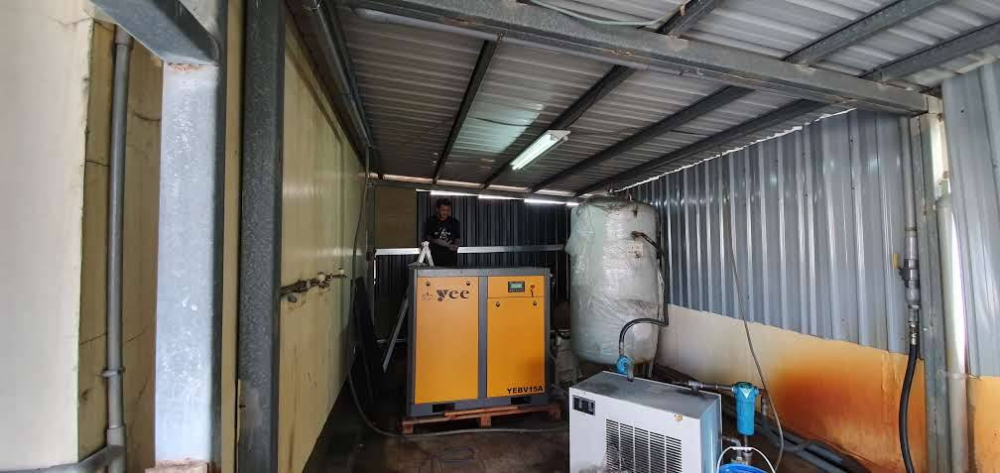

消音器不是「塞住聲音」，而是控制聲能
吸音型或阻性消音器的概念，是讓聲波在通道中和吸音結構作用，同時保留足夠的氣流通道。問題在於，只要改變流道，就可能產生額外阻力。因此真正的工程目標不是追求最大消音量，而是在系統可接受的壓損內，取得需要的插入損失。
設計前至少要知道這 6 件事
沒有風量，就無法判斷通流面積與風速。
決定目前風速，也影響可用的消音器尺寸。
不同頻率需要不同聲學尺寸與內部構造。
製程抽風、輸送或曝氣系統都可能對阻力很敏感。
加阻力後工作點改變，可能讓風量下降或效率變差。
有時出口轉向、延伸或改位置，比盲目加長消音器更有效。
為什麼消音器做太小，反而可能更吵？
如果有效通流面積縮得太多，風速上升，除了壓損增加，還可能在消音器內部、彎頭、縮口或出口產生再生氣流噪音。原本想處理風機聲，最後自己又製造新的噪音。
低頻鼓風機聲，尺寸通常更難壓縮
中高頻相對容易用吸音結構取得效果；低頻波長較長，通常需要更大的聲學尺寸、較長路徑或不同形式的消音設計。這也是為什麼只報「L=1200 mm」無法直接推算一定能降多少分貝。真正要看的是各頻帶的需求。
已經有消音器，出口還是 70、80 dB 以上，怎麼查？
再確認：出口風速是不是太高？
再看：出口是否正對受音點或反射牆？
最後別忘了：機體、馬達、基座與管路也可能同時傳聲。
如果一台鼓風機已有消音器、另一台沒有，現場做並列比較非常有價值。可利用相同負載下的出口量測、頻譜與風量條件，判斷現有消音器真正的效果，而不是只靠型錄猜。
桃園、新竹工廠常見的現場限制
廠房管路密集、直管段不足、空間有限，又不能犧牲製程風量，是鼓風機案件很常見的限制。這時候可能要搭配轉向、延伸出口、局部包覆、軟接、減振或改變消音器截面，而不是只追求單一設備尺寸。
延伸閱讀：工廠風機消音器不是越長越好、湖口工廠鼓風機案例、排風機噪音改善。
常見問題
可以做「完全沒有壓損」的消音器嗎？
任何改變流道的構造都可能帶來阻力，工程上比較合理的說法是把壓損控制在系統可接受範圍，而不是宣稱完全零壓損。
風量不知道，可以先做消音器嗎？
不建議。至少要掌握風量、管徑、設備規格與製程需求，否則很難判斷通流面積與允許阻力。
消音器加長後風量變小怎麼辦？
應重新檢查消音器阻力、截面、風速與風機工作點，必要時調整流道或尺寸，而不是繼續加長。